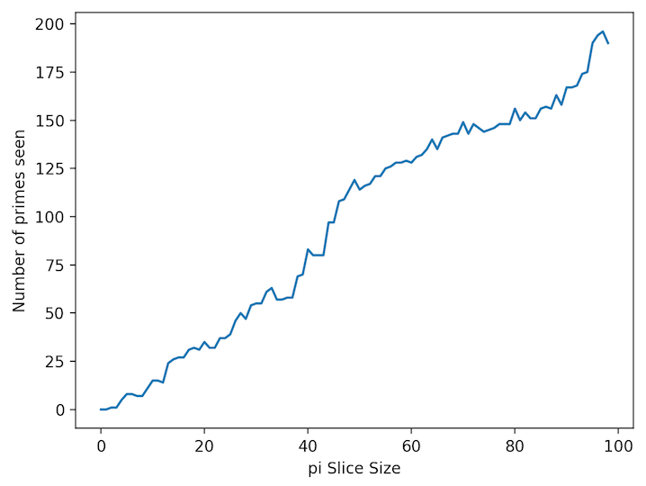
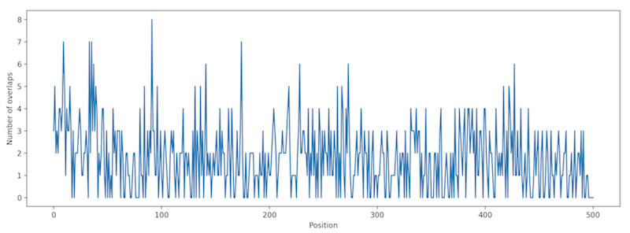

How Many Primes Are In A Slice Of Pi?
Questions:
- What is the number of primes per n-slice of the decimal part of pi?
- What does the graph look like?
- Are there many overlapping primes (i.e. start at the same position in the slice)?
Answers:
The number of primes increases for each decimal-slice of pi. For a slice of size one, that is the digit "1" (the first digit of the decimal "1415926536..."), there are no primes. Easy enough. For 2-slice the digits are "14" and again there are no primes. For the slice of 3 digits we get "142" (that's the decimal rounded at the 3rd place!), and there is one prime found - the "2." And so on... At 10 digits there are 11 primes. At 50 digits there are 119 primes. A graph will illustrate better. :-)

As for prime overlaps, if we look at 500 digits, there are 3 primes that begin at the first position - 14159, 141592653589 and a number with 281 digits - whew! There are 5 at the second position, 2 at the third, etc. Again, a graph will help show the results:

This shows a decreasing number of overlaps as the position increases, because a smaller and smaller sized slice is used as we reach the end.
The code for this can be found here: pi-slice.py
The OEIS has entries for this. Read about them at mathworld.